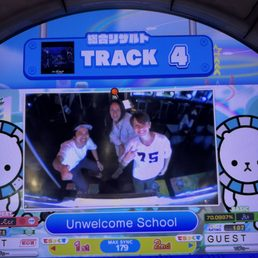

本音息子が「この景品は、日本でしか取れないの？」景品が非売品で店ごとに値段が違う理由を説明する場面。LPの見本にも採用
Because IT's Japanese too. → Because it's in Japanese too.「日本語で書かれている」は in Japanese。
And you read this on the right left. → You read it from right to left.「右から左へ」は from right to left。
Is that only him those who like the anime in your children? → Is he the only one among your children who likes anime?文の構造が崩れている。「兄弟の中で彼だけ？」と言いたい。
You didn't make heart to watch any anime with him? → Haven't you made time to watch any anime with him?make heart は不自然。「時間を作る」は make time。
And the Kirakana and Katakana, they got like 50 or 40, 50 or 50 each characters. → Hiragana and katakana have about 50 characters each, but kanji has tens of thousands.Kirakana は言い間違い。数の言い方も整理する。
Do you have a bag or something that you can put? → Do you have a bag or something you can put it in?put の目的語と in が抜けている。
you gotta go to some animal cafe too right then like dog cafe cats cafe → You should go to an animal cafe too, like a dog cafe or a cat cafe.文を整理し、冠詞と複数形を正す。
You also need to think about something to get for them, like souvenirs, right? → You also need to think about what to get for them, like souvenirs, right?something to get ではなく what to get が自然。
Yeah, what's your dad, like? → What is your dad like?人柄を尋ねる What is ~ like? の形。
You guys also with any fancy restaurant like the wagyu big something? → Did you guys go to any fancy restaurant, like with wagyu or something?前置詞と文法構造が不自然
Yeah, I like to say ramen and sushi is something that we always go to. → I'd say ramen and sushi are places we always go to.構文と主語動詞の一致エラー
So you get used to eating noodles like slapping noodles. → So you get used to eating noodles by slurping them.slappingではなくslurpingが正しい
the Jules Kaisen → Jujutsu Kaisenアニメ名の音声認識誤り
there's many nice sports anime → there are many nice sports anime主語動詞の一致（manyは複数扱い）
So are we already known if you go to the restroom before we start? → Do you need to use the restroom before we start?文法と表現が不自然
So maybe your husband also really love to come to Japan, right? → So maybe your husband would love to come to Japan, right?動詞の形が不正確。'would love to'が正しい表現。
Maybe this one Maybe you already forgot about your budget → Maybe this one, but maybe you've already forgotten about your budget複合文が接続詞なしで接続されている
Yeah maybe that would be something that you like here for now → Yeah, maybe that would be something you'd like for now「here」は冗長
And there was a lot of umbrellas → And there were a lot of umbrellas主語「umbrellas」は複数形なので、be動詞は「were」が正しい
I know, like people, as a Japan don't really use umbrellas, right? → I know, like, in Japan, people don't really use umbrellas, right?前置詞「as」は不適切。「in Japan」が正しく、文構造も改善される
Yeah, and also the Japanese planes are really cheaper compared to the Euro, right? → Yeah, and also Japanese prices are really cheaper compared to the Euro, right?planesではなくpricesが正しい（スピーチ認識エラーか誤発音）
I just have the 100 times size of this 500 yen, 400 yen. → I have items at different price points - 500 yen or 400 yen.「100 times size」は文法的・文意的に不自然。価格のバリエーションを説明する意図が見える
There are many people, it's up to 5 times. → There are many people - it's about 5 times as loud.何が「5倍」なのか不明確。文脈から音量を比較する文と見える
Yeah, or a fucking one. → Yeah, or a rare one.不適切な言葉遣い。文脈から希少性を説明する意図が見える
they don't Japanese government don't trust in us → the Japanese government doesn't trust us冠詞がなく、動詞の形が不正確
but it's funny that if you go outside of Japan when I was in a Europe it's gonna be unmuted → but it's funny that if you go outside of Japan and you're in Europe, it becomes unmuted時制の混合と接続詞の不適切
these are not for sale usually they're originally from the price of the arcade, a crew machine → these aren't originally for sale; they're arcade crane machine prizesより明確で簡潔な表現
Once you do it, your number will be here. → Once you place the order, your number will appear here.「する」が曖昧。何をするのかを明確に
And when that number will be shown on the display, that means that your card is ready to go into the third place. → And when your number appears on the display, it means your card is ready to pick up.複雑で「third place」が不明瞭。シンプルに
Now you get the number for you want to write down → Now you get your order number. You should write it down.文法がねじれている。明確に
Yeah, it's a little bit cold than that. → It's a little colder than that.比較級の用法が誤り。coldは形容詞なのでcolderに
Like in winter, like in the summer, generally it's cold here. → In winter it's very cold, and even in summer it's generally cool here.「like in winter, like in the summer」の重複が不自然
Every time I ask this equation people can especially American people they can answer. → Every time I ask this question, especially American people can answer it.equationは数学用語。questionが適切
I will buy credit card. → I'll pay by credit card.buyではなくpayが適切。支払い方法の説明
remember that you forgot never → Remember, you didn't forget this.文法がねじれて不明瞭
You're lucky that he's the only one that's like a stuff in your children, right? → You're lucky to have the only one like this in your collection, right?'like a stuff'は文法的に不正確で、意図が不明確
The parents in Japan should be much harder, right? → Parents in Japan must be much stricter, right?'should be'は推測の文脈では不自然。'must be'が適切
Kids always use a great memory when you watch anime about study. → Kids have great memory retention when they watch anime.時制と論理が不自然で、'use a great memory'の表現が不正確
That's why even cheaper than usual price. → That's why it's even cheaper than the usual price.'it's'が欠落していて、文法的に不完全
So you go and win, and they come to here to sell. → So when you win, they bring them here to sell.'come to here'は冗長で不自然。'come here'が正しい
Maybe you have 100 yen here so that you can get 500 yen in change. → Do you have 100 yen so you can get 500 yen in change?'here'は不要で、表現も冗長。もっとシンプルな質問形式が自然
So, you have a $2100. → So that's $2,100 total.'a $2100'は文法的に不自然。数字の前にaは使わない
Or, yeah, you still remember about the Pokemon Carl stuff. → Or yeah, you still remember about the Pokémon card stuff, right?'Carl'は'Card'の誤りと思われる。アニメ会話として'card'が文脈に合致
I don't see a much anime that you like. → I don't see much anime that you like.'a much'は文法的に不正確。'much'のみが正しい
We're going at there. → We're going there.'going at there'は不自然。'at'は不要
You don't really pronounce it X. → You don't pronounce it like X.'pronounce it X'より'pronounce it like X'が明確で自然
because this is touchy and katana blades need to face up the sharp side. → because it's delicate and the katana blade should face up with the sharp side up.'touchy'は不適切で、文法が不完全。より正確な表現が必要
yeah maybe that's my favorite character in nike from the high q the volleyball one. → Yeah, maybe she's talking about her favorite character from that volleyball anime.'in nike'は文脈に合わず、話者が不明確。修正で意図を明確化
On the top floor, we have three of all classes for the space of the room. → On the top floor, we have games of all types and genres.'three of all classes for the space'は意味不明確。'games of all types'が自然
I want to make you try something. → I want you to try something here.微調整。'make you try'より'want you to try'が自然
while you're in Japan you guys also shoot some try some Japanese curry rice is also something good. → While you're in Japan, you should also try some Japanese curry rice—it's really good.'shoot some try some'は意味不明。文を整理して自然にする
And we're gonna try this arcade here yeah yeah but we will not try any of this cause you already won both right? → We'll try the arcade games here, but you won't need to play these because you already won prizes, right?冗長で意図が不明確。簡潔に整理することで意味を明確化
things like this should be easy to win you say right → things like this should be easy to win, you say, right?句読点で質問として明確に
You like this button slide! → You're good at this button slide!「like」より「be good at」の方が自然な褒め言葉
It's level 4, upper level 10 plus → It's level 4, up to level 10 or higher「upper level」より「up to」の方が自然
the PHD hacking program is happening → a cyber attack is happening「PhD hacking」は不自然。単に「cyber attack」で十分
Do you also memorize, remember how to get back to the Pokemon castle from here? → Do you remember how to get back to the Pokemon castle from here?「memorize」と「remember」の重複は冗長。文を簡潔に
now he's gonna show you to check the code so you wanna see that → now I'm going to show you how to check it to see if there are any scratches主語と文法が曖昧。ユウキなら「I'm going to」が自然
I got a family with the kids, like his age. Right after that each kids got a 10-pack each → I know families with kids his age who each bought a 10-pack文法：「each kids」は単複不一致。「each」は単数扱い
This building used with a train station 100 years ago. They renovated into this shopping mall instead. → This building used to be a train station 100 years ago. They renovated it into a shopping mall.「used with」は誤り。「used to be」が正しい過去の状態表現
not even 18. You have to wait. Yeah, 20, 20. 21 right → Even in Denmark he's not 18 yet. In Japan you have to be 20 years old, or 21 now.複数の年齢が混在して混乱。現在の日本の法定年齢は明確に
So that each people have to be 60kg or something. → So each person would have to weigh about 60kg.「each people」は単複不一致。「each」は単数形「person」と組み合わせる
it's really rare that a that kind of store they sell the regular prices to the children → it's really rare that a store like this sells items at regular prices for children冠詞の重複「a that」と複雑な構文
sure it's okay for me to upload some vision and Instagram → Can I upload some photos/videos to Instagram?「vision」は不適切。写真やビデオを意味する語が必要
can I have your that you have a whatsapp or Instagram → Can I have your Instagram or WhatsApp?文法が不完全で意味が不明確
yeah look how many stuff you bought → Look how much stuff you bought「stuff」は不可算名詞なので「many」ではなく「much」
ネタYou turned your interest into a job.趣味を仕事にした話。Podcastやツアー紹介で使える。
ネタI watched almost 2000 anime shows in my life約2000本という具体的な数字。自己紹介の鉄板ネタになる。
やることYeah we can go get more later.あとでポケモンカードをもっと買いに行く約束。
客の声he's connected with people so easy here息子がアニメ話題で日本の人と簡単につながれるという、母親の実感。
やることI promise him now I will also watch Rampus母親が息子と一緒にアニメを見る約束。感動ポイントで、Podcastのネタにもなる。
ネタBecause I teach Japanese online.日本語レッスンの自然な宣伝の入口になる。
客の声One Piece I watched 200 and 25 books of One Pieceワンピースを「225」ほど読んだ・見たという具体的な数字（巻数ではなく話数の可能性）。熱量の目安になる。
客の声some shows like Death Note actually manga is even better than that原作派の本音。作品おすすめの切り口になる。
学びmost of the manga here they're all written in japanese英語版は少なく高いという困りごと。ツアーで英語版マンガの買い方を案内できる。
ネタallowed to drink beer if someone over 16 buys itデンマークの飲酒ルールという文化ネタ。Podcastで使える。
客の声We already have a gift for my little sister and my big sisterお土産の進み具合。兄と父の分は未購入だと分かる。
やることWe should buy something to him, a beer.父へのお土産はビールという方向。免税や持ち帰りの案内につながる。
客の声Maybe we had like 10 to 20.ツアー中のゲスト食事量を把握できる、写真やポッドキャストのネタになる。
客の声I got really sad and Ace got killed by a kind.11歳の子のアニメへの深い感情的入り込み、年代別の推し変わり追跡ポイント
学びIf you read the manga, you can watch what happens after the LBF.アニメと漫画の関係性を説明、ツアー中に伝えるべき情報
客の声does he play any sports only e-sports only e-sportsゲストの子どもの実際のスポーツ活動が限定的（デジタル世代の特徴）
客の声I spent 10,000 yen on Pokemon.ゲストの消費行動把握、ツアー中の予算アドバイスの重要ポイント。
やることwe have to take a lot of photos of us today so that you can you can share with your familyツアー後の家族シェアが約束された、ユウキのInstagram投稿コンテンツ確保。
やることThat's the life size Godzilla situation in Shinjuku.ツアーコース確認ポイント、新宿ゴジラが必訪地確定。
客の声But maybe in the future, you want to make that kind of shelf.ゲストの子どもの夢・将来計画、推し推しへの深い好意が明らかに。
ネタI want to work at a space station.11歳の子供の宇宙志向は、ポッドキャストのネタになり、リスナーの関心を引く。
学びYou can skip a grade, eh?日本の飛び級制度を実例で説明でき、教育制度の違いをポッドキャストで紹介できる。
学びdoes a metro that is not advanced like in Japan, but still a human that drives it.デンマークと日本の電車システムの違いが具体的に把握でき、次のツアーで活かせる。
客の声It's pretty cool and like it's really advanced.日本の電車システムへの肯定的な評価で、ツアーガイドのトークに使える。
やることThe green one.具体的なJRラインの利用を示す情報。次回のツアー案内に活かせる。
ネタthere's a lot of choicesアニメグッズの豊富さがゲストに好印象を与えており、秋葉原の魅力を説明する際に使える
客の声Or maybe his grandma and grander Got him some money right家族によるツアー資金援助の実例。客の家庭状況の把握。
やることI read one book it's a little bit gory for you I think年齢に応じた作品紹介の判断基準。次回から参加者の年齢層を事前確認。
学びMaybe in Denmark you don't use cash anymore, right?デンマークと日本の支払い文化の違い。多くの国から来た客へ日本のキャッシュ文化が特殊なことを伝える必要がある。
客の声Stefan I think you will like these two this is what you got in at the Pokemon Center子供の名前（Stefan、11歳）と興味（ポケモン）の確認。次回ツアー時に個別対応のための情報。
客の声Yeah, we got it in Shibuya. In that building, the big building.客が事前に渋谷を訪問済みであることが判明。ツアー計画時の重複避け、客の経験レベル把握。
学びI know, like people, as a Japan don't really use umbrellas, right?日本の傘使用文化。海外から見ると異なるという発見で、ポッドキャストのネタになる。
ゲストの声You feel like you are the noisiest one in the train.日本の静寂文化への驚き、ツアー体験の生の反応
ネタHe doesn't have anything else to spend money on.親子のユーモア、ツアー計画（子供を買い物で満足させる作戦）の成功
ゲストの声And my mom also owes me 10,000 yen.子供の現実的な経済感覚、ツアー中の思わぬ出費。
ゲストの声In my school, me and my best friends, we share Pokemon cards. And we live in two different schools. So every Friday, there's like training day in our school.子供たちの定期的な社交活動、異なる学校間での文化交流。
ゲストの声in Denmark Japanese cards are quite rare ah even better日本製品への価値認識、希少性が喜びを生む。
やることThe parents don't know much about the anime, so yeah. But the kids will be one of them.ツアー集客ターゲット分析、親子世代の知識差を活かした営業戦略。
学びIt's illegal in Japan to gamble with money. You know how the loophole is?日本の独特な法的システム、ツアーの教育的価値
ネタAnd it's like they're bypassing the law. Wow, smart.日本の法的抜け穴システムの巧妙さ、文化理解のポッドキャストネタ
ゲストの声how much is 100 yen in kronen?価格換算への関心、消費者心理が顕著
やることKenjaku if you have any specific manga you like to get this a very good place to getツアーガイドの資源活用、顧客の個別ニーズへの対応
学びbut when he's young it's so difficult to buy volume 1 everybody wants to buy volume 1 so it's really rare actually人気作品の第1巻の希少性、ツアー在庫計画への示唆
ネタthey don't Japanese government don't trust in us日本政府がiPhoneのミュート機能を強制する文化的背景。
やることdo you know where the english books are there's only a fewツアー時に次に確認すべき情報源。
学びfour to five times more expensive日本の商品が他国より大幅に高いという現実。
やることBecause if you buy the one without boxes, this is actually really cheapツアーでのお得な買い物情報
学びthey also come and say you can play in the English tooゲームの多言語対応が旅行者に便利
ツアー情報people win a crew machine and they bring it here, they resell店の商品出所と価格設定の仕組み
客の声even though they are made of the same piece of paperカードの価格差への客の驚き
ネタFor 2 billion yen. Of course that one is really rare.ポッドキャストネタになるカード価格
学びthey open for 24 hours everywhere日本の便利店の24時間営業は旅行者に便利
学びbeer is much cheaper than it's really like when I talk to the American people日本の飲料価格が他国より圧倒的に安い
ツアー情報only kids under 18 to buy the card at the regular price子ども保護の日本特有ビジネスモデル
やることtomorrow we are considering going to Nikko次のツアー目的地確定
客の声I got really many. I have this one, this one, this one, this one.子どもの所有カードが多いことへのこだわり、コレクター心
客の声I got the last one bonus that I was looking for.目標達成の喜びと購入完了のマイルストーン
やることAnd when that number will be shown on the display, that means that your card is ready to go20分後のピックアップアクション、客に次のステップを伝える
やることwe come back here later再来店の約束を確認
客の声We started fighting and then the snowstorm started and it snowed and it was so happy. I think it started bleeding and it was so cold.デンマークの豪雪での劇的な思い出。ポッドキャストネタになる
ネタEven in Denmark, the summer, this summer was crazy, right?デンマークでも今年の夏は異常に暑かったという、両国の共通体験
やることthere's a jump fest in December.12月イベント。客への次の関連提案につながる
やることSo basically you want to do browsing and then whenever you see something cool you want a button.ユウキがツアーのスタイルを客に確認。運営上のポイント
客の声Oh! Twitter! Oh yeah, Chopper! Chopper is right there.珍しいキャラクターグッズ発見の喜びと反応
客の声I think before because I say that Usopp is one of my favoriteタイムスキップ前のUsopp好み。One Pieceの推し設定
ネタevery line that Wilson tells becomes trueOne Pieceの逸話。ポッドキャストで面白いネタになる
ネタBuggy became an emperor and it was even less strong and meat hawk and crocodile is way strongerキャラ成長の矛盾。アニメファンなら共感できる話
客の声I think I still have it. I'm like, I can't sleep at 10. But I only fall asleep 2 hours.ジェットラグの具体的症状。客のツアー状態を理解できる
ネタDesno! Oh that is cool!珍しいアニメ作品発見の反応
学び2600 yen that's pretty cheap in Denmark it would have cost like 7000 yen日本購入の具体的メリット。ツアー価値提案になる
やることI think I'm just gonna get it outカップラーメン蓋フィギュアの購入決定
やることThank you for your time. Thank you. Nice to meet you.ツアー終了の別れ。顧客満足度の指標
ネタThis one's like 50 kroner. It's an investment. Invest for yourself? Because if you buy it, you can study harder.グッズ購入を学習投資として正当化するユウキの工夫。ツアーでの販売促進の学び
学びYeah, that's what happened to the every single kid here, right?日本のアニメグッズ市場の子どもへの浸透を観察。海外客への文化説明のポイント
ネタEven adults.大人もアニメグッズを購入する日本文化。ツアーガイド自身の発見として興味深い
学びThis one doesn't come with a box. That's why even cheaper than usual price.ゲストが価格決定要因を学んでいる。ツアーでの商品知識提供の実例
ネタ$394,000, $394,000.驚くほど高額なグッズ。ツアーでのアニメ市場の豊かさを象徴する話
やることAnd that's what they are reselling.ユウキが市場メカニズムを説明することで、ゲストの購買判断を助けている
ネタYou're spending more than you expected, right? Yeah, but it's really cheap.ゲストが予想以上に購入しているが満足している。ツアーでの顧客満足度の指標
やることRight, you never forget, right?ユウキが客の個人的興味（ポケモン）を記憶して言及。顧客サービスの個別対応
学びyou still remember about the Pokemon Carl stuffユウキが会話の履歴を保持して顧客を喜ばせる例
やることI don't see the tennis one for her.ユウキが客の娘のために個別に目当ての商品を探している。顧客中心のサービス提供
学びJust Spies family.ユウキが正しい英語発音を客に教えている。ツアー中の教育的価値
学びYou don't really pronounce it X. Just Spies family.ユウキが発音矯正を提供。異文化間コミュニケーションの支援
やることyeah you gotta do some kendo tooユウキが次のアクティビティ（剣道体験など）を示唆している可能性
客の声The reason why I never go to the arcade is because in Denmark, there's no arcade.デンマークからの客の背景情報
ネタIn Denmark there is basically raining all the time.デンマークの天候についての話
ネタIt was so crazy. So in the second I could have a break, there was just rain.客の劇中での雷と雨の経験
やることwhile you're in Japan you guys also shoot some try some Japanese curry rice is also something good.ユウキが日本食体験を勧めている
やることThis is my favorite game that I want to make you guys play.ユウキが推奨するゲーム
客の声Yeah, maybe we can dance子どもがダンスに興味。次回の企画に活かせる
ネタoh my god i don't know why but yeah i'm gonna show youチュートリアルの不具合
ネタYou can do it gently.ユウキの励まし方が印象的
やることYou got three more songs.ツアー中ゲームをあと3曲プレイする予定が記録されている
やることBut just be careful not to shoot a video with the other people only one right?施設でのプライバシー配慮・撮影ルール
学びYou're getting better.短期集中でも上達が見える、モチベーション維持のポイント
ネタIn Denmark, when you're 11 years old. He can drink, he can drive.文化比較のユーモア
学びthere's too many of them秋葉原のアーケード業界の飽和状態
やることBecause that one's almost like money, right?ツアー客にカード保管の重要性を説明
ネタIn your pocket? Yeah, wait, wait.顧客とのやり取りの緊張感
客の声It was 30,000 yen. Yeah, yeah. It was so good. I don't know how to open.高価な商品への戸惑い
やることWe need to make it safe. right?カード保護への複数回の確認が重要
客の声Oh this is Venusaur. Isn't that like really really expensive? Old one yeah yeah yeah.子どもの価格反応の強さ
やることIt's still 1pm. So are you sure that you don't need to buy?タイムマネジメント
客の声What was your highlight, Stefan? What did you like the best day? Oh, it's hard. Pokemon cards, arcade, figurines, t-shirts.複数のコンテンツが効果的に機能
ネタThis is the highlight. You see them. Oh my god!子どもの驚きと感動の瞬間
やることAre many people learning Japanese? Yeah, many people who like anime take my lesson.アニメファンという客層を教育事業に活かすビジネスモデル
やることWatch your step. hmm this is yeah how about you Yulia what did you like the best today安全確認と顧客満足度の双方を気配りながら進行
ネタsensory overload right yeah just like Gojo sense of domain expansion yeah so much information coming in your eyes so you cannot make any foodツアーの情報量の多さを創意的に比喩
学びHe needs to prove that I stole it. Right, right, right.アニメの複雑なプロットへの理解度
やること180 yen is the regular price, nine times more expensive than that storeツアーで市場価格の仕組み（転売・マークアップ）を実例で教育
客の声so much fun thank you very much顧客満足度表現・次回依頼への好材料
ネタso that I can tag your accountSNS活用でゲストとの接続を保つ工夫
やることsee you next time in Japanツアー後の関係継続の約束
ネタyeah look how many stuff you boughtポッドキャストネタになりうる
母親が一緒に見ると約束した作品名（Rampus）が不明
ワンピースの『225』が話数か巻数か不明
デンマークの飲酒ルールはゲストの発言のみで未確認
ウソップとコビーが好きと言ったのが誰か（ユウキかゲストの母親か）不明
姉のテニスの順位表現
父親の仕事が運転手か信号・制御系か
飛び級の学年表現
父親の職種
傘とポンチョの話の趣旨
5倍の対象
iPhoneの音の話が撮影音かどうか
4〜5倍の対象と、どちらの国が高いか
ZAの価格や通貨換算の数字
冒頭の靴やゲーム機の価格の話は聞き取りが不確か
20億円という金額が正しいか不確か
10万円のカードが30周年記念かは不明
ビール価格の比較結果が不確か
Apeが誰か不明(リュークか)
16歳が誰のことか不明
135の意味が不明
数千〜数十万円の価格は聞き取りが不確か
支払い方法は聞き取りが不確か
出血した経緯と当事者が不確か
Jump Festの発言者が不明
店名が不明
Desnoがデスノートか不確か
眠れた時間の経緯が不確か
500の単位が不確か
購入した人が誰か不確か
投資だと言った人が誰か不明
Yutaは憂太と推定
394,000の通貨と金額が不確か
合計2100円の通貨単位が不確か
tennis one for herのherが誰か不明
ハイキューの好きなキャラ名は不明
体験談の話者が母親か不明
気温64度は華氏か不確か
冒頭の数字の意味が不明
レベル9の聞き取りが不確か
運転・飲酒の冗談の話者が不確か
サイバー攻撃が事実か冗談か不確か
ドラムの話者が不明
ポケモンキャッスルが実在の店名か不確か
30,000円の品が何か不確か
約10倍の転売の話が事実か不確か
飲酒の話題の主語（兄か本人か）が不明
200人の数字が不確か